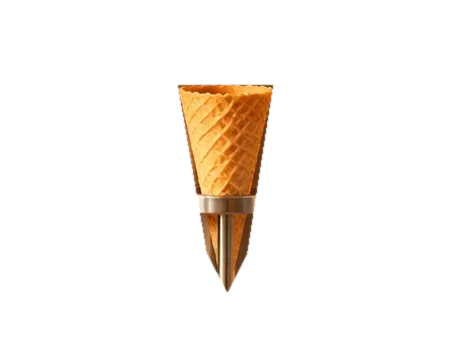

CLÁSSICO
Baunilha
Suave, delicada e cremosa. Um clássico que combina com tudo.

Escolha um sabor, segure a alavanca vermelha e monte sua própria casquinha. Depois, compartilhe com alguém.
Um sorvete cremoso. Rua Linden, 14.

Escolha, sirva e finalize. O sabor da experiência está em fazer do seu jeito.
Baunilha, morango ou pistache. Você decide por onde começar.
Segure a alavanca e crie uma casquinha do seu jeito.
Adicione sua cobertura favorita e envie sua criação.
Pequenos pontos de cor e uma leve crocância.
Um ótimo motivo para sorrir.
Pequenos pedacinhos de chocolate que deixam
cada mordida ainda melhor.

A Twist Stop nasceu da ideia de transformar uma pausa gostosa em uma experiência criativa: você escolhe o sabor, controla cada volta e finaliza com a cobertura que mais combina com você.
Por aqui, o protagonista é o seu gosto. Cada casquinha ganha um toque pessoal — e nenhuma precisa ser igual à outra.
Venha criar a suaRua Linden, 14
Nosso cantinho verde-menta.
Em breve.
Tem coisa boa chegando.
Leite, trigo e castanhas.
Todos os sabores e coberturas utilizam os mesmos equipamentos. Consulte nossa equipe antes de escolher seu sorvete.